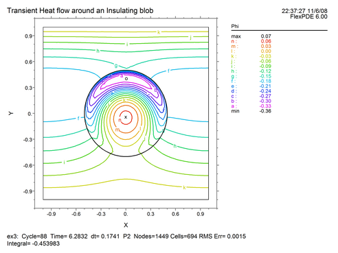
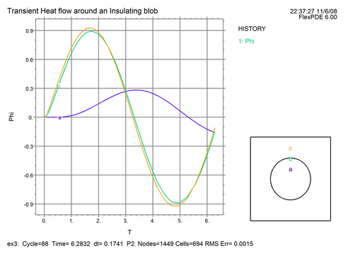

|
Time Dependence |

  
|
|
Time Dependence |
|
Unless otherwise defined, FlexPDE recognizes the name "T" (or "t") as representing time. If references to time appear in the definitions or equations, FlexPDE will invoke a solution method appropriate to initial-value problems.
FlexPDE will apply a heuristic control on the timestep used to track the evolution of the system. Initially, this will be based on the time derivatives of the variables, and later it will be chosen so that the time behavior of the variables is nearly quadratic. This is done by shortening or lengthening the time intervals so that the cubic term in a Taylor expansion of the variables in time is below the value of the global selector ERRLIM.
In time dependent problems, several new things must be specified:
| • | The THRESHOLD of meaningful values for each variable (if not apparent from initial values). |
| • | The time-dependent PDE's |
| • | The time range of interest, |
| • | The times at which plots should be produced |
| • | Any history plots that may be desired |
Note: FlexPDE can treat only first derivatives in time. Equations that are second-order in time must be split into two equations by defining an intermediate variable.
The time range is specified by a new script section
TIME start TO finish
Plot times are specified by preceding any block of plot commands by a time control, in which specific times may be listed, or intervals and end times, or a mixture of both:
FOR T = t1, t2 BY step TO t3 ….
We can convert our heat flow problem to a time dependent one by including a time term in the heat equation:
Div(k*grad(Phi)) = c*dt(Phi)
To make things interesting, we will impose a sinusoidal driving temperature at the top plate, and present a history plot of the temperature at several internal points.
The whole script with pertinent modifications now looks like this:
TITLE 'Transient Heat flow around an Insulating blob'
VARIABLES
Phi (threshold=0.01) { the temperature }
DEFINITIONS
K = 1 { default conductivity }
C = 1 { default heat capacity }
R = 1/2
EQUATIONS
Div(-K*grad(phi)) + C*dt(Phi) = 0
BOUNDARIES
REGION 1 'box'
START(-1,-1)
VALUE(Phi)=0 LINE TO (1,-1)
NATURAL(Phi)=0 LINE TO (1,1)
VALUE(Phi)=sin(t) LINE TO (-1,1)
NATURAL(Phi)=0 LINE TO CLOSE
REGION 2 'blob' { the embedded blob }
K = 0.001
C = 0.1
START(R,0)
ARC(CENTER=0,0) ANGLE=360
TIME 0 TO 2*pi
PLOTS
FOR T = pi/2 BY pi/2 TO 2*pi
CONTOUR(Phi)
VECTOR(-K*grad(Phi))
ELEVATION(Phi) FROM (0,-1) to (0,1)
HISTORIES
HISTORY(Phi) AT (0,r/2) (0,r) (0,3*r/2)
END
At the end of the run (t=2*pi), the contour and history look like this:


Page url: index.html?timedependence2.html